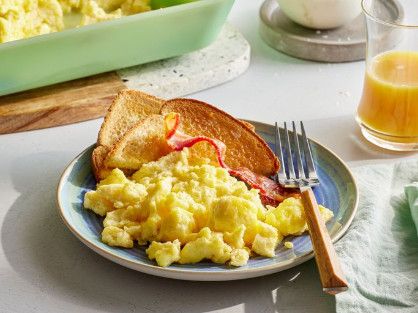

SCRAMBLED EGGS

Description
Scrambled eggs are a classic breakfast dish made by whisking eggs and then cooking them in a pan until they are set. Scrambled eggs can be made in a variety of ways, from simple and plain to more elaborate versions with added ingredients like cheese, vegetables, or meats. Scrambled eggs are a quick and easy dish that can be enjoyed on their own or as part of a larger breakfast spread.
Ingredients
- Eggs
- Milk or cream
- Butter
- Salt and pepper
- Optional: cheese, vegetables, meats
Steps
- Crack the eggs: Crack the eggs into a bowl and whisk them until well combined.
- Add milk or cream: Add a splash of milk or cream to the eggs and whisk to combine.
- Cook the eggs: Melt butter in a pan over medium heat. Pour the eggs into the pan and let them sit for a few seconds. Stir the eggs gently with a spatula, folding them over themselves until they are just set.
- Season the eggs: Season the eggs with salt and pepper to taste.
- Add extras: If desired, add cheese, vegetables, or meats to the eggs and stir to combine.
- Serve the eggs: Serve the scrambled eggs hot with toast or other breakfast items.